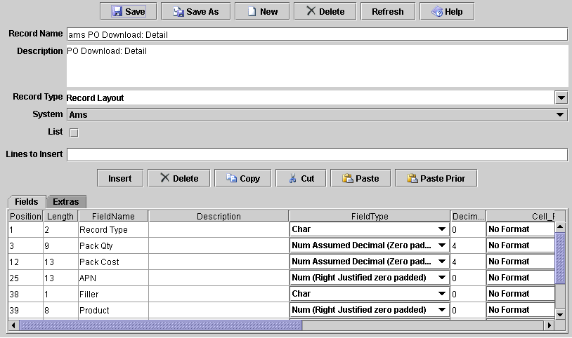

JRecord
JRecord
Record Editor |
|||||||||||
|
Record Editor |
|||||||||||
This packages IO routines and line / field access code was originally written for the Record-Editor. If you also have the Record-Editor. you can:
Editing a layout in the RecordEditor:

Also code for the Utilities - Layout Wizard, Editor and diff is held in the RecordEditor project.
| JRecord at SourceForge | Download Page | Forums |